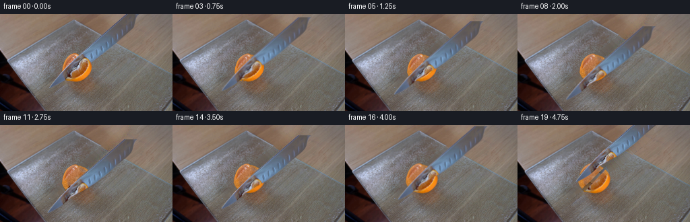
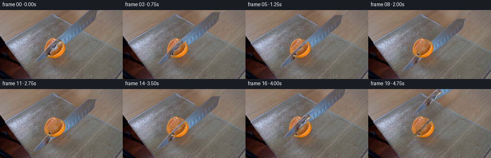
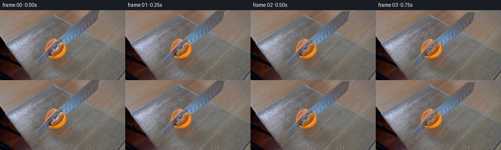

CODING AGENTS AS PIXEL WORLD MODELS
traex/GPT-6.1-Sol · 0042
点击播放 · 原生 RGB 像素
逐轮保存的候选
回放视频、检查图与代码变化。
每份候选均可单独播放。实际图片检查记录在下方工具轨迹中。
候选 01播放与检查图
点击播放 · 原生 RGB 像素

展开代码变化
--- 上一保存版本
+++ 本次保存版本
@@ -0,0 +1,168 @@
+from pathlib import Path
+import numpy as np
+from PIL import Image, ImageDraw
+import cv2
+from scipy.ndimage import gaussian_filter, distance_transform_edt, map_coordinates
+from scipy.interpolate import CubicSpline
+from artifact_io import save
+
+ROOT=Path(__file__).resolve().parent
+W,H=256,144
+S=4
+rng=np.random.default_rng(2718)
+I=np.array(Image.open(ROOT/'first_frame.png').convert('RGB'),dtype=np.uint8)
+Y,X=np.mgrid[:H,:W].astype(np.float32)
+
+def poly(points):
+ p=Image.new('L',(W*S,H*S),0)
+ ImageDraw.Draw(p).polygon([(round(x*S),round(y*S)) for x,y in points],fill=255)
+ return np.asarray(p.resize((W,H),Image.Resampling.LANCZOS),dtype=np.float32)/255
+
+# The two visible edges of the steel blade, including its rounded point.
+left=[(186.4,-3),(186.4,0),(180.8,5),(175,10),(169,15),(163.2,20),
+ (157.5,25),(151.6,30),(146,35),(140.2,40),(134.4,45),(128.5,50),
+ (122.7,55),(117.3,60),(111.9,65),(107.3,70),(102,75),(97.4,80),
+ (92.2,85),(87.5,90),(82.7,95),(78.1,100),(73.5,105),(72.8,108.2)]
+right=[(208,-3),(207,0),(203,5),(201,10),(200,15),(197,20),(192.7,25),
+ (186.2,30),(180.5,35),(174.5,40),(168.8,45),(163.5,50),
+ (157.4,55),(150.7,60),(144,65),(136.2,70),(127,75),(118.2,80),
+ (110,85),(103.6,90),(98.5,95),(92,100),(83.5,105),(78,108.2),(74.2,109)]
+knife=poly(left+right[::-1])
+# Photographic surface behind the moving blade.
+# Inpainting is done separately on the wooden tabletop and the glass plane,
+# so that the glass perimeter stays sharp even underneath the original knife.
+fruit_outline=[(113,57.9),(118,60),(126,63.2),(131.4,67.4),(134.5,72),
+ (136,78.5),(134.8,84.5),(132,90),(127,95),(120,98.5),
+ (111,99.4),(104,98),(97.3,95),(93,89),(91.7,82),
+ (93.3,75),(96.6,68.1),(102.1,62.3),(108,59)]
+# Smooth interpolating closed curve keeps the natural outline instead of a polygon.
+p=np.array(fruit_outline+[fruit_outline[0]])
+t=np.r_[0,np.cumsum(np.linalg.norm(np.diff(p,axis=0),axis=1))]
+cs=CubicSpline(t,p,bc_type='periodic')
+fruit=poly(cs(np.linspace(0,t[-1],500)).tolist())
+removal=((knife>.015)|(fruit>.015)).astype(np.uint8)*255
+bg=cv2.inpaint(I,removal,4,cv2.INPAINT_TELEA).astype(np.float32)
+# Refine the lost table/glass boundary by same-plane interpolation.
+board_y=8.4+.570*(X-108)
+board=(Y>=board_y)
+valid=(removal==0)
+for region in [board,~board]:
+ v=valid & region
+ den=gaussian_filter(v.astype(float),7)
+ smooth=np.stack([gaussian_filter(I[:,:,c]*v,7)/np.maximum(den,1e-8) for c in range(3)],-1)
+ target=(removal>0)®ion
+ # Use the nearest unoccluded plane's grain over a low frequency fitted color.
+ _,inds=distance_transform_edt(~v,return_indices=True)
+ grain=I.astype(float)-gaussian_filter(I.astype(float),(1.2,1.2,0))
+ g=grain[inds[0],inds[1]]
+ fill=smooth+0.5*g
+ reliable=target&(den>.028)
+ bg[reliable]=fill[reliable]
+# Blend the two sides at the thin bevel on the board's rear rim.
+rim=np.exp(-((Y-board_y)/.55)**2)*((knife>.02)&(Y<62))
+bg+=rim[:,:,None]*np.array([6.,8.,12.])
+# Preserve all pixels away from the objects and the blade.
+static=bg.copy()
+static[removal==0]=I[removal==0]
+
+# The cut face obscured by the original knife. The original rind and visible
+# pulp are kept photographically intact; only the newly exposed part is filled.
+u=(X-114.2)/17.6
+v=(Y-78.9)/19.8
+r=np.sqrt(u*u+v*v)
+angle=np.arctan2(v,u)
+noise=rng.normal(0,1,(H,W))
+fine=gaussian_filter(noise,.42)
+coarse=gaussian_filter(noise,1.1)
+seg=9
+phase=angle*seg+.19*np.sin(3*angle)
+dist=np.abs(np.sin(phase/2))
+mem=np.exp(-(dist/.13)**2)*np.clip((r-.10)*1.7,0,.65)
+# Juice sacs make fine longitudinal glints rather than a flat painted face.
+sacs=np.sin(47*r+2.6*np.sin(phase))*np.sin(phase*3.1+17*r)
+surface=np.empty((H,W,3),float)
+for c,(base,scale) in enumerate([(174,10),(106,12),(54,12)]):
+ surface[:,:,c]=base+fine*7+coarse*7+sacs*scale + 8*(1-r) + mem*([31,42,37][c])
+# Central white pith, not a large solid spot.
+core=np.exp(-((u+.03)**2+(v+.05)**2)/.0065)
+surface=surface*(1-core[:,:,None]*.58)+np.array([222,193,151])*core[:,:,None]*.58
+# Source-colored inpainting contributes local lighting and pulp variation.
+missing=((knife>.08)&(fruit>.03)).astype(np.uint8)*255
+fr_inpaint=cv2.inpaint(I,missing,3,cv2.INPAINT_TELEA).astype(float)
+reconstruct=surface*.64+fr_inpaint*.36
+# Continue rind where it was previously behind the steel, with a tiny pith rim.
+outer=np.clip((r-.83)/.17,0,1)
+peel=np.stack([226+fine*10,137+fine*9,35+fine*8],-1)
+reconstruct=reconstruct*(1-outer[:,:,None]*.66)+peel*outer[:,:,None]*.66
+fruit_tex=I.astype(float).copy()
+fruit_tex=fruit_tex*(1-knife[:,:,None])+reconstruct*knife[:,:,None]
+# Premultiplied photographic blade eliminates fringe color when it moves.
+blade_rgb=I.astype(float)*knife[:,:,None]
+fruit_rgb=fruit_tex*fruit[:,:,None]
+
+def warp(tex,alpha,M):
+ a=cv2.warpAffine(alpha,M,(W,H),flags=cv2.INTER_LINEAR,borderMode=cv2.BORDER_CONSTANT)
+ rgb=cv2.warpAffine(tex.astype(np.float32),M,(W,H),flags=cv2.INTER_LINEAR,borderMode=cv2.BORDER_CONSTANT)
+ return rgb,a
+
+def over(bg,rgb,a):
+ return bg*(1-a[:,:,None])+rgb
+
+def smooth(z):
+ z=np.clip(z,0,1);return z*z*(3-2*z)
+
+frames=[I.copy()]
+# Slow continuous pressure through the fruit, a brief contact with the board,
+# then withdrawal. No change in the locked camera or in the static apparatus.
+depths=[0,.9,2.3,4.6,7.4,10.4,13.4,16.1,18.2,19.7,20.8,21.2,21.2,19.3,15.2,9.1,1.5,-8,-18,-25]
+xs=[0,0,-.2,-.4,-.6,-.8,-1,-1.2,-1.5,-1.8,-2.1,-3,-4.1,-3.5,-1,2,5.2,8,11,13]
+for i in range(1,20):
+ dep=depths[i];dx=xs[i]
+ f=static.copy()
+ # The contact shadow follows the separated citrus pieces only; the broad
+ # original room and cutting-board reflection remain motionless.
+ separation=smooth((i-11)/5)
+ split=(X+Y-193.5)
+ leftpart=fruit*np.clip(.5-split/.7,0,1)
+ rightpart=fruit-leftpart
+ # A gentle deformation under the blade, followed by elastic recovery.
+ compression=.017*np.sin(np.pi*np.clip(i/13,0,1))
+ for sign,part in [(-1,leftpart),(1,rightpart)]:
+ tx=sign*1.9*separation
+ ty=sign*1.35*separation
+ rotation=(1.7 if sign==1 else -.7)*separation
+ M=cv2.getRotationMatrix2D((115,89),rotation,1)
+ M[1,1]*=(1-compression)
+ M[1,2]+=89*compression
+ M[0,2]+=tx;M[1,2]+=ty
+ # Interior cut surfaces become visible as the quarters slightly part.
+ grain=rng.normal(0,.3,(H,W)) if False else fine
+ cutedge=np.exp(-(split/.7)**2)*separation
+ tex=fruit_tex.copy()
+ tex=tex*(1-cutedge[:,:,None]*.30)+np.array([218,149,83])*cutedge[:,:,None]*.30
+ rgb,a=warp(tex*part[:,:,None],part,M)
+ sh=cv2.GaussianBlur(a,(0,0),1.25)
+ sm=np.float32([[1,0,1],[0,1,1.8]])
+ sh=cv2.warpAffine(sh,sm,(W,H))*separation*.10
+ f*=1-sh[:,:,None]
+ f=over(f,rgb,a)
+ # Steel advances vertically in the cutting plane with a slight draw stroke.
+ M=np.float32([[1,0,dx],[0,1,dep]])
+ rgb,a=warp(blade_rgb,knife,M)
+ # Small specular changes are restricted to steel, never the background.
+ glint=(.8*np.sin(i*.5)+.012*dep)
+ rgb=rgb+a[:,:,None]*np.array([glint*.45,glint*.65,glint])
+ # Soft near-contact blade shadow; strongly localized so as not to obscure pulp.
+ if dep>2:
+ sh=cv2.GaussianBlur(a,(0,0),1.1)
+ sh=cv2.warpAffine(sh,np.float32([[1,0,1.1],[0,1,1.4]]),(W,H))
+ sh*=np.clip(dep/22,0,1)*.10*np.exp(-((Y-90)/22)**2)
+ f*=1-sh[:,:,None]
+ f=over(f,rgb,a)
+ frames.append(np.clip(np.round(f),0,255).astype(np.uint8))
+frames=np.stack(frames)
+Image.fromarray(np.clip(static,0,255).astype(np.uint8)).save(ROOT/'.tmp/background.png')
+Image.fromarray(np.clip(fruit_tex,0,255).astype(np.uint8)).save(ROOT/'.tmp/reconstructed.png')
+np.save(ROOT/'.tmp/knife_mask.npy',knife)
+save(frames,ROOT)
+print('saved',frames.shape,'first frame identical:',np.array_equal(frames[0],I))
候选 02播放与检查图
点击播放 · 原生 RGB 像素

展开代码变化
--- 上一保存版本
+++ 本次保存版本
@@ -97,7 +97,21 @@
fruit_tex=I.astype(float).copy()
fruit_tex=fruit_tex*(1-knife[:,:,None])+reconstruct*knife[:,:,None]
# Premultiplied photographic blade eliminates fringe color when it moves.
-blade_rgb=I.astype(float)*knife[:,:,None]
+metal=I.astype(float).copy()
+# The near citrus quarter hides the central part of the blade in frame zero.
+# Synthesize only that hidden steel, without carrying orange pixels along
+# with the knife as it travels. Its lengthwise sky reflection joins the
+# genuine steel at the back and the visible rounded tip.
+steel=np.empty_like(metal)
+for c,levels in enumerate(([90,96,111,104,91],[84,112,142,133,105],[83,135,177,163,130])):
+ steel[:,:,c]=np.interp(Y,[0,40,56,70,100],levels)
+brushed=fine*1.8+1.8*np.sin(X*1.31+Y*1.46)
+steel+=brushed[:,:,None]
+highlight=np.exp(-((X+1.14*Y-198)/1.0)**2)*12
+steel+=highlight[:,:,None]*np.array([.7,.9,1.])
+hidden=fruit*(knife>.05)
+metal=metal*(1-hidden[:,:,None])+steel*hidden[:,:,None]
+blade_rgb=metal*knife[:,:,None]
fruit_rgb=fruit_tex*fruit[:,:,None]
def warp(tex,alpha,M):
@@ -114,8 +128,8 @@
frames=[I.copy()]
# Slow continuous pressure through the fruit, a brief contact with the board,
# then withdrawal. No change in the locked camera or in the static apparatus.
-depths=[0,.9,2.3,4.6,7.4,10.4,13.4,16.1,18.2,19.7,20.8,21.2,21.2,19.3,15.2,9.1,1.5,-8,-18,-25]
-xs=[0,0,-.2,-.4,-.6,-.8,-1,-1.2,-1.5,-1.8,-2.1,-3,-4.1,-3.5,-1,2,5.2,8,11,13]
+depths=[0,.9,2.3,4.6,7.4,10.4,13.4,16.1,18.2,19.7,20.8,21.2,21.2,19.3,15.2,7.5,-7,-23,-41,-59]
+xs=[0,0,-.2,-.4,-.6,-.8,-1,-1.2,-1.5,-1.8,-2.1,-3,-4.1,-3.5,-1,3,7,12,18,24]
for i in range(1,20):
dep=depths[i];dx=xs[i]
f=static.copy()
@@ -127,6 +141,7 @@
rightpart=fruit-leftpart
# A gentle deformation under the blade, followed by elastic recovery.
compression=.017*np.sin(np.pi*np.clip(i/13,0,1))
+ near_layer=None
for sign,part in [(-1,leftpart),(1,rightpart)]:
tx=sign*1.9*separation
ty=sign*1.35*separation
@@ -136,7 +151,6 @@
M[1,2]+=89*compression
M[0,2]+=tx;M[1,2]+=ty
# Interior cut surfaces become visible as the quarters slightly part.
- grain=rng.normal(0,.3,(H,W)) if False else fine
cutedge=np.exp(-(split/.7)**2)*separation
tex=fruit_tex.copy()
tex=tex*(1-cutedge[:,:,None]*.30)+np.array([218,149,83])*cutedge[:,:,None]*.30
@@ -145,7 +159,10 @@
sm=np.float32([[1,0,1],[0,1,1.8]])
sh=cv2.warpAffine(sh,sm,(W,H))*separation*.10
f*=1-sh[:,:,None]
- f=over(f,rgb,a)
+ if sign==1:
+ near_layer=(rgb,a)
+ else:
+ f=over(f,rgb,a)
# Steel advances vertically in the cutting plane with a slight draw stroke.
M=np.float32([[1,0,dx],[0,1,dep]])
rgb,a=warp(blade_rgb,knife,M)
@@ -159,6 +176,10 @@
sh*=np.clip(dep/22,0,1)*.10*np.exp(-((Y-90)/22)**2)
f*=1-sh[:,:,None]
f=over(f,rgb,a)
+ # The front cut quarter is in front of the cutting plane. The blade
+ # disappears progressively into the incision rather than painting over
+ # the whole face of the tangerine.
+ f=over(f,*near_layer)
frames.append(np.clip(np.round(f),0,255).astype(np.uint8))
frames=np.stack(frames)
Image.fromarray(np.clip(static,0,255).astype(np.uint8)).save(ROOT/'.tmp/background.png')
候选 03播放与检查图
候选 04播放与检查图
点击播放 · 原生 RGB 像素


展开代码变化
--- 上一保存版本 +++ 本次保存版本 @@ -109,7 +109,7 @@ steel+=brushed[:,:,None] highlight=np.exp(-((X+1.14*Y-198)/1.0)**2)*12 steel+=highlight[:,:,None]*np.array([.7,.9,1.]) -hidden=fruit*(knife>.05) +hidden=fruit*(knife>.05)*np.clip((X+Y-192.8)/1.8,0,1) metal=metal*(1-hidden[:,:,None])+steel*hidden[:,:,None] blade_rgb=metal*knife[:,:,None] fruit_rgb=fruit_tex*fruit[:,:,None]
可观测工具轨迹
实际执行的命令与返回图片。
命令 1exit 0
/bin/bash -lc 'ls -la && cat prompt.txt && cat GENERATION_RULES.md'
命令 2exit 0
/bin/bash -lc "cat artifact_io.py && python - <<'PY'
from PIL import Image
import numpy as np
im=np.asarray(Image.open('first_frame.png'));print(im.shape)
# color block encode lowres
im=Image.fromarray(im).resize((80,45));a=np.asarray(im)
for y in range(45):
s=''
for r,g,b in a[y].astype(float):
if r>130 and r>g*1.4 and g>b*1.3:c='O'
elif r>90 and r>g*1.25 and g>b*1.3:c='o'
elif max(r,g,b)<35:c=' '
elif max(r,g,b)<65:c='.'
elif max(r,g,b)<100:c=':'
elif max(r,g,b)<140:c='-'
elif max(r,g,b)<180:c='='
elif max(r,g,b)<210:c='+'
else:c='#'
s+=c
print(s)
PY"命令 3exit 0
/bin/bash -lc "python - <<'PY'
import numpy as np
from PIL import Image
im=np.array(Image.open('first_frame.png'))
for y in range(0,144,4):
print(f'{y:3}',end=' ')
for x in range(0,256,2):
r,g,b=im[y:y+4,x:x+2].mean((0,1));v=(r+g+b)/3
if r>g*1.3 and r>b*1.55 and r>100:c='O' if r>180 else 'o'
elif r>g*1.1 and r>b*1.15 and r>100:c='s'
else:c=' .:-=+*#%@'[min(9,int(v/26))]
print(c,end='')
print()
print('coordinates orange:')
a=(im[:,:,0]>im[:,:,1]*1.3)&(im[:,:,0]>im[:,:,2]*1.55)&(im[:,:,0]>110)
for y in range(40,111,2):
xs=np.where(a[y])[0]
if len(xs): print(y,xs.tolist())
print('rgb scan knife:')
for y in [0,10,20,30,40,50,60,70,80,90,100]:
print(y,[(x,tuple(im[y,x])) for x in range(95,205,5)])
PY"命令 4exit 0
/bin/bash -lc "python - <<'PY'
from PIL import Image
import numpy as np
im=np.asarray(Image.open('first_frame.png')).astype(float)
print('x labels every character = 2px, starting x80')
print(' '+''.join(str((x//10)%10) if x%10==0 else ' ' for x in range(80,220,2)))
for y in range(0,104,2):
s=''
for x in range(80,220,2):
r,g,b=im[y:y+2,x:x+2].mean((0,1));
if r>g*1.35 and r>b*1.6:c='O'
elif b-r>15:c='B'
elif b-r>5:c='b'
elif g>r+4:c='g'
elif r-b>26:c='w'
elif r-b>13:c='s'
else:c=' .:-=+*#%@'[min(9,int((r+g+b)/3/26))]
s+=c
print(f'{y:3} {s}')
PY"命令 5exit 0
/bin/bash -lc "python - <<'PY'
from PIL import Image
import numpy as np
im=np.array(Image.open('first_frame.png')).astype(float)
for y in range(28,104,2):
xs=np.arange(72,185)
# candidate blue pixels
a=(im[y,:,2]-im[y,:,0]>12)
sel=np.where(a&(np.arange(256)>70)&(np.arange(256)<185))[0]
print(y,sel.tolist())
print('knife boundary RGB')
for y in [28,32,36,40,44,48,52,56,60,64,68,72,76,80,84,88,92,96,100,104]:
print(y,' '.join(f'{x}:{tuple(im[y,x].astype(int))}' for x in range(80,176,4)))
PY"命令 6exit 0
/bin/bash -lc "python - <<'PY'
import numpy as np
from PIL import Image
im=np.array(Image.open('first_frame.png')).astype(float)
# each pixel color semantic fruit patch
print(' '+''.join(str((x//10)%10) if x%10==0 else ' ' for x in range(88,142)))
print(' '+''.join(str(x%10) for x in range(88,142)))
for y in range(54,102):
s=''
for x in range(88,142):
r,g,b=im[y,x]
if r>g*1.3 and r>b*1.5 and r>135:
c='Y' if g>150 else ('O' if r>215 else ('o' if r>175 else 'r'))
elif r>170 and g>150 and b>135:c='P'
elif b-r>14:c='B'
elif b-r>5:c='b'
elif r-b>25:c='s'
elif r-b>12:c='w'
elif r<85:c='.'
else:c='-'
s+=c
print(f'{y:3}: {s}')
PY"命令 7exit 0
/bin/bash -lc "python - <<'PY' import importlib.util for v in ['numpy','PIL','cv2','scipy']: print(v, bool(importlib.util.find_spec(v))) PY"
命令 8exit 0
/bin/bash -lc "python - <<'PY'
from PIL import Image
import numpy as np
im=np.array(Image.open('first_frame.png'))
# sample fruit face distribution
for y in [68,72,76,80,84,88,92,96]:
print(y,[(x,im[y,x].tolist()) for x in range(112,135,2)])
PY"命令 9exit 0
/bin/bash -lc "python - <<'PY'
import numpy as np
from PIL import Image
im=np.array(Image.open('first_frame.png')).astype(float)
for y in [0,5,10,15,20,25,30,35,40,45,50,55,60,65,70,75,80,85,90,95,100,104,106]:
print(y,[(x,tuple(im[y,x].astype(int))) for x in range(int(188-1.12*y)-3,min(256,int(212-.65*y)+5)) if x%2==0])
PY"命令 10exit 0
/bin/bash -lc "python - <<'PY'
from PIL import Image
import numpy as np
im=np.array(Image.open('first_frame.png')).astype(float)
for x in [110,120,130,140,150,160,170,180,190,200,210,220,230,240,250,255]:
# strongest RGB gray transitions chroma at boundary
print(x,[(y,(im[y,x,0]-im[y,x,2]).round()) for y in range(0,90,4)])
PY"命令 11exit 0
/bin/bash -lc "cat > generate.py <<'PY'
from pathlib import Path
import numpy as np
from PIL import Image, ImageDraw
import cv2
from scipy.ndimage import gaussian_filter, distance_transform_edt, map_coordinates
from scipy.interpolate import CubicSpline
from artifact_io import save
ROOT=Path(__file__).resolve().parent
W,H=256,144
S=4
rng=np.random.default_rng(2718)
I=np.array(Image.open(ROOT/'first_frame.png').convert('RGB'),dtype=np.uint8)
Y,X=np.mgrid[:H,:W].astype(np.float32)
def poly(points):
p=Image.new('L',(W*S,H*S),0)
ImageDraw.Draw(p).polygon([(round(x*S),round(y*S)) for x,y in points],fill=255)
return np.asarray(p.resize((W,H),Image.Resampling.LANCZOS),dtype=np.float32)/255
# The two visible edges of the steel blade, including its rounded point.
left=[(186.4,-3),(186.4,0),(180.8,5),(175,10),(169,15),(163.2,20),
(157.5,25),(151.6,30),(146,35),(140.2,40),(134.4,45),(128.5,50),
(122.7,55),(117.3,60),(111.9,65),(107.3,70),(102,75),(97.4,80),
(92.2,85),(87.5,90),(82.7,95),(78.1,100),(73.5,105),(72.8,108.2)]
right=[(208,-3),(207,0),(203,5),(201,10),(200,15),(197,20),(192.7,25),
(186.2,30),(180.5,35),(174.5,40),(168.8,45),(163.5,50),
(157.4,55),(150.7,60),(144,65),(136.2,70),(127,75),(118.2,80),
(110,85),(103.6,90),(98.5,95),(92,100),(83.5,105),(78,108.2),(74.2,109)]
knife=poly(left+right[::-1])
# Photographic surface behind the moving blade.
# Inpainting is done separately on the wooden tabletop and the glass plane,
# so that the glass perimeter stays sharp even underneath the original knife.
fruit_outline=[(113,57.9),(118,60),(126,63.2),(131.4,67.4),(134.5,72),
(136,78.5),(134.8,84.5),(132,90),(127,95),(120,98.5),
(111,99.4),(104,98),(97.3,95),(93,89),(91.7,82),
(93.3,75),(96.6,68.1),(102.1,62.3),(108,59)]
# Smooth interpolating closed curve keeps the natural outline instead of a polygon.
p=np.array(fruit_outline+[fruit_outline[0]])
t=np.r_[0,np.cumsum(np.linalg.norm(np.diff(p,axis=0),axis=1))]
cs=CubicSpline(t,p,bc_type='periodic')
fruit=poly(cs(np.linspace(0,t[-1],500)).tolist())
removal=((knife>.015)|(fruit>.015)).astype(np.uint8)*255
bg=cv2.inpaint(I,removal,4,cv2.INPAINT_TELEA).astype(np.float32)
# Refine the lost table/glass boundary by same-plane interpolation.
board_y=8.4+.570*(X-108)
board=(Y>=board_y)
valid=(removal==0)
for region in [board,~board]:
v=valid & region
den=gaussian_filter(v.astype(float),7)
smooth=np.stack([gaussian_filter(I[:,:,c]*v,7)/np.maximum(den,1e-8) for c in range(3)],-1)
target=(removal>0)®ion
# Use the nearest unoccluded plane's grain over a low frequency fitted color.
_,inds=distance_transform_edt(~v,return_indices=True)
grain=I.astype(float)-gaussian_filter(I.astype(float),(1.2,1.2,0))
g=grain[inds[0],inds[1]]
fill=smooth+0.5*g
reliable=target&(den>.028)
bg[reliable]=fill[reliable]
# Blend the two sides at the thin bevel on the board's rear rim.
rim=np.exp(-((Y-board_y)/.55)**2)*((knife>.02)&(Y<62))
bg+=rim[:,:,None]*np.array([6.,8.,12.])
# Preserve all pixels away from the objects and the blade.
static=bg.copy()
static[removal==0]=I[removal==0]
# The cut face obscured by the original knife. The original rind and visible
# pulp are kept photographically intact; only the newly exposed part is filled.
u=(X-114.2)/17.6
v=(Y-78.9)/19.8
r=np.sqrt(u*u+v*v)
angle=np.arctan2(v,u)
noise=rng.normal(0,1,(H,W))
fine=gaussian_filter(noise,.42)
coarse=gaussian_filter(noise,1.1)
seg=9
phase=angle*seg+.19*np.sin(3*angle)
dist=np.abs(np.sin(phase/2))
mem=np.exp(-(dist/.13)**2)*np.clip((r-.10)*1.7,0,.65)
# Juice sacs make fine longitudinal glints rather than a flat painted face.
sacs=np.sin(47*r+2.6*np.sin(phase))*np.sin(phase*3.1+17*r)
surface=np.empty((H,W,3),float)
for c,(base,scale) in enumerate([(174,10),(106,12),(54,12)]):
surface[:,:,c]=base+fine*7+coarse*7+sacs*scale + 8*(1-r) + mem*([31,42,37][c])
# Central white pith, not a large solid spot.
core=np.exp(-((u+.03)**2+(v+.05)**2)/.0065)
surface=surface*(1-core[:,:,None]*.58)+np.array([222,193,151])*core[:,:,None]*.58
# Source-colored inpainting contributes local lighting and pulp variation.
missing=((knife>.08)&(fruit>.03)).astype(np.uint8)*255
fr_inpaint=cv2.inpaint(I,missing,3,cv2.INPAINT_TELEA).astype(float)
reconstruct=surface*.64+fr_inpaint*.36
# Continue rind where it was previously behind the steel, with a tiny pith rim.
outer=np.clip((r-.83)/.17,0,1)
peel=np.stack([226+fine*10,137+fine*9,35+fine*8],-1)
reconstruct=reconstruct*(1-outer[:,:,None]*.66)+peel*outer[:,:,None]*.66
fruit_tex=I.astype(float).copy()
fruit_tex=fruit_tex*(1-knife[:,:,None])+reconstruct*knife[:,:,None]
# Premultiplied photographic blade eliminates fringe color when it moves.
blade_rgb=I.astype(float)*knife[:,:,None]
fruit_rgb=fruit_tex*fruit[:,:,None]
def warp(tex,alpha,M):
a=cv2.warpAffine(alpha,M,(W,H),flags=cv2.INTER_LINEAR,borderMode=cv2.BORDER_CONSTANT)
rgb=cv2.warpAffine(tex.astype(np.float32),M,(W,H),flags=cv2.INTER_LINEAR,borderMode=cv2.BORDER_CONSTANT)
return rgb,a
def over(bg,rgb,a):
return bg*(1-a[:,:,None])+rgb
def smooth(z):
z=np.clip(z,0,1);return z*z*(3-2*z)
frames=[I.copy()]
# Slow continuous pressure through the fruit, a brief contact with the board,
# then withdrawal. No change in the locked camera or in the static apparatus.
depths=[0,.9,2.3,4.6,7.4,10.4,13.4,16.1,18.2,19.7,20.8,21.2,21.2,19.3,15.2,9.1,1.5,-8,-18,-25]
xs=[0,0,-.2,-.4,-.6,-.8,-1,-1.2,-1.5,-1.8,-2.1,-3,-4.1,-3.5,-1,2,5.2,8,11,13]
for i in range(1,20):
dep=depths[i];dx=xs[i]
f=static.copy()
# The contact shadow follows the separated citrus pieces only; the broad
# original room and cutting-board reflection remain motionless.
separation=smooth((i-11)/5)
split=(X+Y-193.5)
leftpart=fruit*np.clip(.5-split/.7,0,1)
rightpart=fruit-leftpart
# A gentle deformation under the blade, followed by elastic recovery.
compression=.017*np.sin(np.pi*np.clip(i/13,0,1))
for sign,part in [(-1,leftpart),(1,rightpart)]:
tx=sign*1.9*separation
ty=sign*1.35*separation
rotation=(1.7 if sign==1 else -.7)*separation
M=cv2.getRotationMatrix2D((115,89),rotation,1)
M[1,1]*=(1-compression)
M[1,2]+=89*compression
M[0,2]+=tx;M[1,2]+=ty
# Interior cut surfaces become visible as the quarters slightly part.
grain=rng.normal(0,.3,(H,W)) if False else fine
cutedge=np.exp(-(split/.7)**2)*separation
tex=fruit_tex.copy()
tex=tex*(1-cutedge[:,:,None]*.30)+np.array([218,149,83])*cutedge[:,:,None]*.30
rgb,a=warp(tex*part[:,:,None],part,M)
sh=cv2.GaussianBlur(a,(0,0),1.25)
sm=np.float32([[1,0,1],[0,1,1.8]])
sh=cv2.warpAffine(sh,sm,(W,H))*separation*.10
f*=1-sh[:,:,None]
f=over(f,rgb,a)
# Steel advances vertically in the cutting plane with a slight draw stroke.
M=np.float32([[1,0,dx],[0,1,dep]])
rgb,a=warp(blade_rgb,knife,M)
# Small specular changes are restricted to steel, never the background.
glint=(.8*np.sin(i*.5)+.012*dep)
rgb=rgb+a[:,:,None]*np.array([glint*.45,glint*.65,glint])
# Soft near-contact blade shadow; strongly localized so as not to obscure pulp.
if dep>2:
sh=cv2.GaussianBlur(a,(0,0),1.1)
sh=cv2.warpAffine(sh,np.float32([[1,0,1.1],[0,1,1.4]]),(W,H))
sh*=np.clip(dep/22,0,1)*.10*np.exp(-((Y-90)/22)**2)
f*=1-sh[:,:,None]
f=over(f,rgb,a)
frames.append(np.clip(np.round(f),0,255).astype(np.uint8))
frames=np.stack(frames)
Image.fromarray(np.clip(static,0,255).astype(np.uint8)).save(ROOT/'.tmp/background.png')
Image.fromarray(np.clip(fruit_tex,0,255).astype(np.uint8)).save(ROOT/'.tmp/reconstructed.png')
np.save(ROOT/'.tmp/knife_mask.npy',knife)
save(frames,ROOT)
print('saved',frames.shape,'first frame identical:',np.array_equal(frames[0],I))
PY
python generate.py"命令 12exit 0
/bin/bash -lc "python - <<'PY'
import numpy as np
from PIL import Image
for k in [0,3,7,11,14,19]:
im=np.array(Image.open(f'frames/{k:02}.png')).astype(float)
print('FRAME',k)
print(' '+''.join(str((x//10)%10) if x%10==0 else ' ' for x in range(78,148,2)))
for y in range(52,121,2):
s=''
for x in range(78,148,2):
r,g,b=im[y:y+2,x:x+2].mean((0,1))
if r>g*1.3 and r>b*1.5 and r>135:c='O' if r>215 else 'o'
elif r>170 and g>150 and b>135:c='P'
elif b-r>14:c='B'
elif b-r>5:c='b'
elif r-b>25:c='s'
elif r-b>12:c='w'
elif r<85:c='.'
else:c='-'
s+=c
print(f'{y:3}: {s}')
# numeric metrics
im0=np.array(Image.open('frames/00.png')).astype(float)
for k in range(1,20):
a=np.array(Image.open(f'frames/{k:02}.png')).astype(float)
d=np.max(np.abs(a-im0),2)
print(k,'changed',int((d>8).sum()),'MAE',abs(a-im0).mean().round(2),'obj',abs(a[56:102,90:138]-im0[56:102,90:138]).mean().round(2))
PY"命令 13exit 0
/bin/bash -lc "python generate.py && python - <<'PY'
from PIL import Image
import numpy as np
for k in [1,7,11,16,19]:
im=np.array(Image.open(f'frames/{k:02}.png')).astype(float)
print('FRAME',k)
for y in range(56,103,2):
s=''
for x in range(88,140,2):
r,g,b=im[y:y+2,x:x+2].mean((0,1))
if r>g*1.3 and r>b*1.5 and r>135:c='O' if r>215 else 'o'
elif r>170 and g>150 and b>135:c='P'
elif b-r>14:c='B'
elif b-r>5:c='b'
elif r-b>25:c='s'
elif r-b>12:c='w'
elif r<85:c='.'
else:c='-'
s+=c
print(f'{y:3} {s}')
f=np.array([np.array(Image.open(f'frames/{k:02}.png')) for k in range(20)])
print('step differences',np.abs(np.diff(f.astype(float),axis=0)).mean((1,2,3)).round(2))
print('identical',np.array_equal(f[0],np.array(Image.open('first_frame.png'))))
PY"命令 14exit 0
/bin/bash -lc "python generate.py && python - <<'PY'
from PIL import Image
import numpy as np
f0=np.array(Image.open('frames/00.png')).astype(float)
f1=np.array(Image.open('frames/01.png')).astype(float)
print('initial mean change',abs(f1-f0).mean())
for y in [68,72,76,80,84,88,92]:
print(y,' '.join(f'{x}:{tuple(f1[y,x].astype(int))}' for x in [98,102,106,110,114,118,122,126,130,134]))
PY"命令 15exit 0
/bin/bash -lc "python - <<'PY'
from PIL import Image
import numpy as np
from pathlib import Path
f=np.stack([np.asarray(Image.open(p)) for p in sorted(Path('frames').glob('*.png'))])
assert f.shape==(20,144,256,3) and f.dtype==np.uint8
assert np.array_equal(f[0],np.asarray(Image.open('first_frame.png')))
p=np.load('pixels.npz')['pixels'];assert p.shape==(144,256,20)
print('Validated 20 RGB frames, 256x144; frame 00 pixel-identical.')
print('Outputs:',*[str(p) for p in [Path('pixels.npz'),Path('index.html'),Path('generate.py')]])
PY"保存候选 4 份；完成命令 15 次；可验证图片返回 0 张。原始 API 响应与完整日志保留在本地。